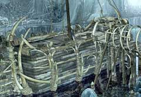
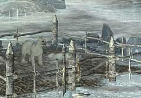

|
出航
船の氷が溶けたら、いよいよシベリアへ向けて出航しなければならない。出航するためには、 ・船の前の扉を開く方法を探る ということを解決すればよい。

・氷が溶けたら船に近寄ってみよう。 ・すでにハンスが船に乗っているだろう。 ・そして、船の姿以外にも何か違った部分があるはずだ。 ・それさえ気づけば、扉を開く方法が分かるだろう。

・ユーキーを連れて行くにはどうしたらよいか? ・ユーキーを思い通りの場所に連れて行くにはどうしたらよいか・・・なんてことは考えなくてもいい。
| << 前へ |
|